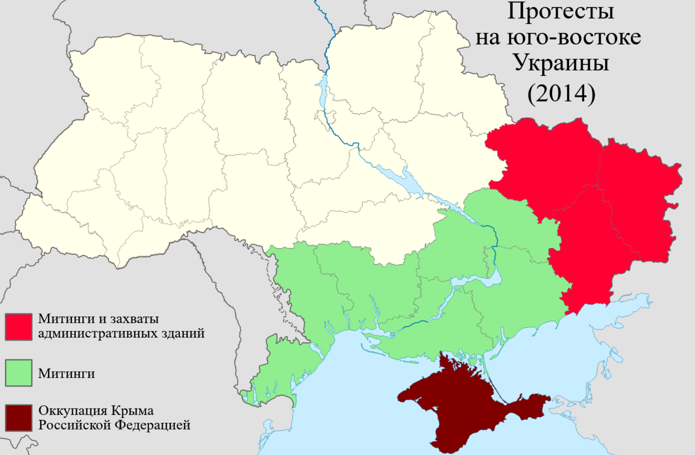
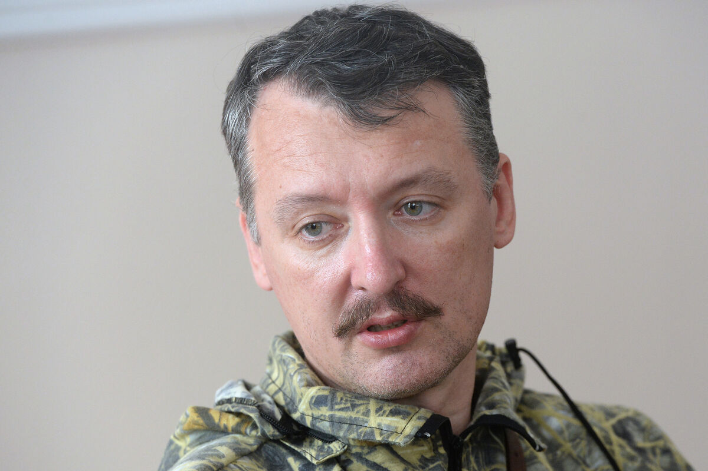
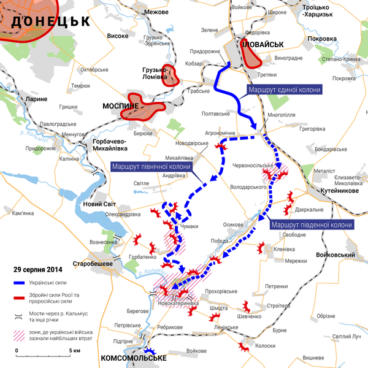
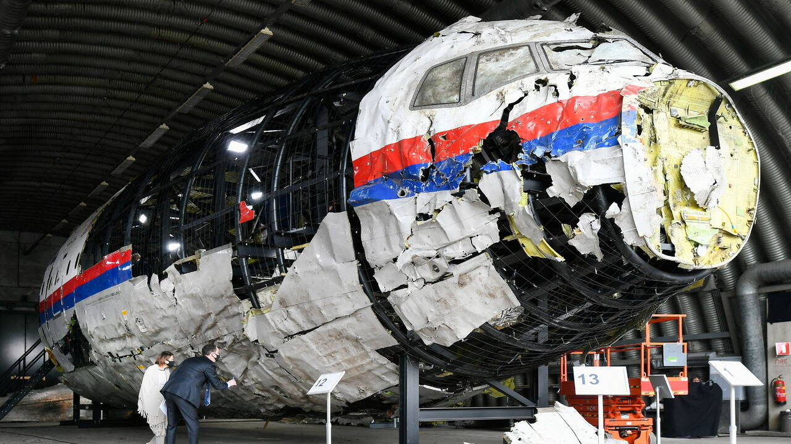
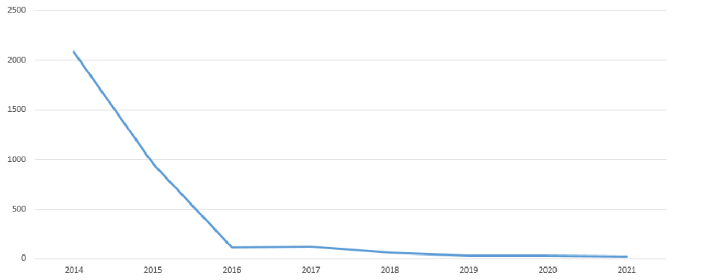
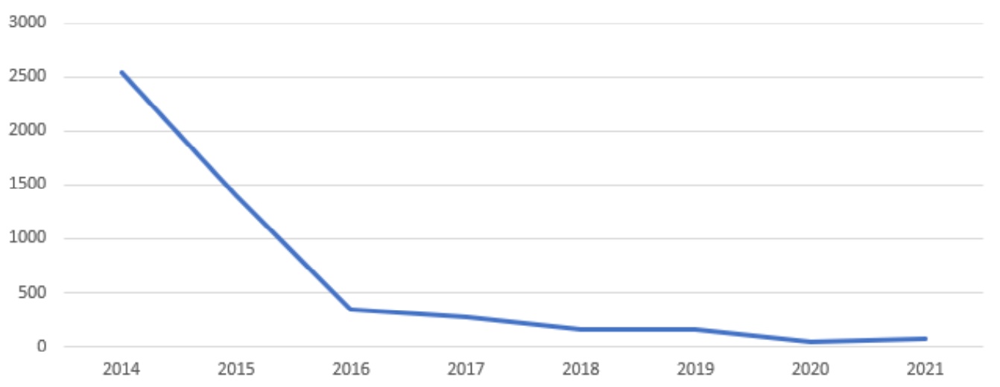
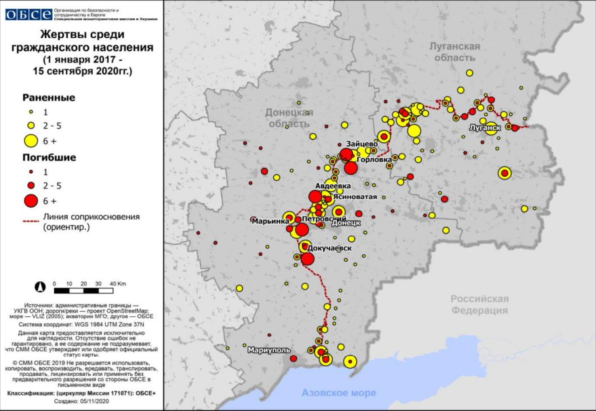
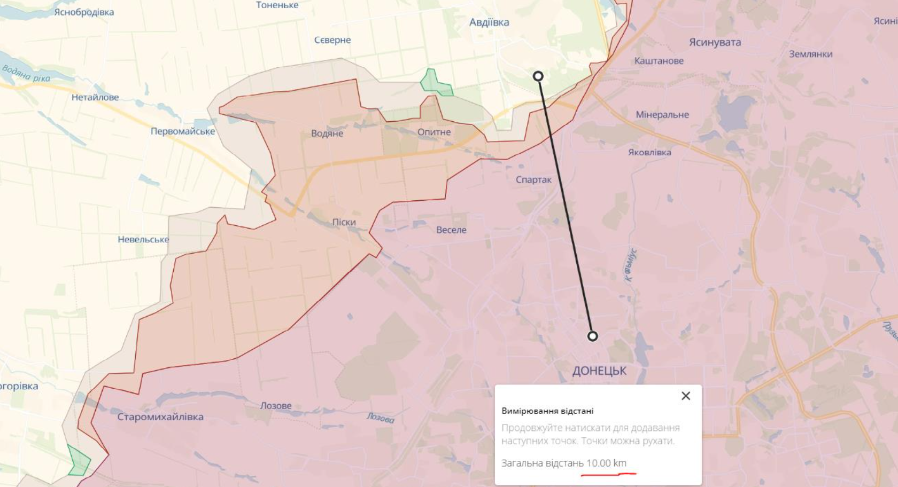

"Я понимал, что с такой небольшой группой идти на Луганск или на Донецк не имеет смысла. Это города-миллионники, в которых пятьдесят человек... растворятся без видимого эффекта. Сразу мной была поставлена задача для себя – найти какой-то средней величины населённый пункт. С одной стороны, достаточно значимый, с другой стороны, в котором мы сможем быстро установить народную власть. Власть, поддержанную народом. А не просто захватить..."

Так же:
2014
Донбасс
1. Митинги
После самоустранения Януковича В.Ф. с поста Президента Украины и назначения на его должность врио Президента Украины Турчинова А.В. в разных частях страны началась новая волна митингов. Цели митингов были разные: роспуск Верховной Рады, запрет деятельности ультраправых организаций, референдум по вопросу федеративного устройства Украины, признание русского языка вторым государственным, вступление Украины в Таможенный союз, присоединение к Российской Федерации.

На данный момент времени можно сказать о том, что большинство протестов «подогревались» российской стороной. Многие из целей митингов так или иначе перекликались с нынешними целями Российской Федерации на территории Украины.
Итогами данных митингов можно назвать следующее:
⎯ в Харькове были захвачены административные здания. 7 апреля 2014 года в Харькове была провозглашена Харьковская народная республика. В кратчайший срок сепаратистов выбили из административных зданий и ХНР прекратила своё существование. Погибли люди;
⎯ в Одессе в ходе митингов произошёл Пожар в Доме профсоюзов в ходе которого погибло 48 человек, пострадало около 250;
⎯ в Донецкой области с помощью России и сепаратистов образовалась ДНР;
⎯ в Луганской области с помощью России и сепаратистов образовалась ЛНР;
⎯ на остальной части Украины митинги не привели к каким-либо серьезным последствиям.
2. Захват города Славянск
В ночь с 11 на 12 апреля отряд из 52 человек под руководством Игоря Стрелкова перешёл российско-украинскую границу. На границе их встретили и доставили на машинах в Славянск, где Пономарёв В.В. («народный мэр» города Славянск) разместил их на своей базе.
По словам Стрелкова, после перехода границы у отряда не было чёткого плана, куда идти:

Соединившись с местной группой, отряд Стрелкова штурмовал городской отдел милиции, затем – здание СБУ. Городскую управу заняли без боя. Над административными зданиями были подняты российские флаги. К обеду весь город был в руках боевиков. Оружием, захваченным в городском отделе милиции, вооружились местные добровольцы.
Городской голова Неля Штепа первоначально заявляла журналистам, что вооружённые люди, появившиеся в Славянске, представляют собой «ополчение Донбасса», что они выступают за референдум и она многих из них знает лично: «Весь Славянск сегодня вышел на улицы города и поддерживает активистов. Эти люди пришли к нам с миром, у них нет агрессии по отношению к нам».
Несколькими днями позднее, уехав из города, она обвинит боевиков в том, что они раздают мирному населению оружие.
Для освобождения города Славянск Советом национальной безопасности и обороны Украины было принято решение о проведение АТО.
3. Начало АТО
Антитеррористическая операция на востоке Украины (АТО) – комплекс военных и специальных организационно-правовых мероприятий украинских силовых структур, направленный на противодействие деятельности незаконных российских и пророссийских вооруженных формирований в войне на востоке Украины.
Существует ошибочное мнение о том, что АТО началась 7 апреля 2014 года. Данная ошибка связана с заявлением Турчинова А.В. которое неправильно трактуют. Данное заявление говорило о антитеррористических мерах, связанных с тем, что на момент заявления уже были захвачены административные здания в Харькове, Донецке и Луганске, а также были «самопровозглашены» народные республики. Данные меры заключались в том, что на помощь местным силовым структурам будут направлены люди из других областей для устранения сепаратистских движений.
В действительности, после захвата города Славянск 12 апреля 2014 года утром 13 апреля в город приехал спецназ СБУ «Альфа», который попал в засаду. После этого было понятно, что сопротивление спецназу было оказано не сепаратистами, а со стороны неизвестной (на тот момент) ДРГ.
13 апреля 2014 года было проведено заседание Совета национальной безопасности и обороны, по итогам которого было принято решение и издан Приказ о начале проведения АТО от 14 апреля 2014 г.
4. Новая «власть» ДНР и ЛНР
В данном разделе приведены последние руководители со стороны Украины и первые руководители со стороны ДНР и ЛНР.
Отдельно стоит обратить внимание на то, как именно пришли к власти руководители ДНР и ЛНР. Хоть республики и называются «народные», по факту мы имеем то, что ни одних выборов там не было проведено, а все руководители были кем-то поставлены на эту должность либо захватывали власть вооружённым путём.
| Должность | Кто | Как стал | Прочее |
|---|---|---|---|
| Мэр Донецка (Украина) | Лукьянченко Александр Алексеевич, гражданин Украины Выдвиженец от Партии регионов | В 2002 году выдвигает свою кандидатуру на пост городского головы Донецка и 31 марта побеждает в выборах. 26 марта 2006 года избирается на второй срок. 31 октября 2010 года избирается на третий срок | В марте 2014 года на фоне протестов на Юго-Востоке Украины заявил, что «Россия аннексией Крыма убила саму суть федерализации нашей страны». В июле 2014 года покинул Донецк, поскольку «не принял ультиматум, выдвинутый властями ДНР». С 13 ноября 2014 года его полномочия де-факто исполняет назначенный властями ДНР Мартынов И.Ю. |
| Мэр Донецка (ДНР) | Мартынов Игорь Юрьевич, гражданин Украины Назначенный на должность | 13 октября 2014 года Глава ДНР Александр Захарченко назначил Игоря Мартынова на пост главы администрации города | На данный момент занимал большое количество политических должностей в ДНР. Внесён в санкционные списки большого количества стран |
| Мэр Луганска (Украина) | Кравченко Сергей Иванович, гражданин Украины Выдвиженец от Партии Регионов | В апреле 2006 года избран городским головой Луганска. В 2010 году повторно стал городским головой Луганска | С начала военных действий в 2014 году на территории Луганской области находился в Луганске, затем выехал в другую часть Украины. 7 августа 2014 бойцы батальона «Айдар» на одном из блокпостов города Счастье задержали городского голову Луганска Сергея Кравченко, который поддерживал пророссийские акции |
| Мэр Луганска (ЛНР) | Пилавов Манолис Васильевич, гражданин Украины Партия «Единая Россия» | Участвовал в деятельности ЛНР, после задержания городского головы Сергея Кравченко в августе фактически взял на себя руководство городом 2 декабря 2014 года повстанцы назначили главой Администрации города Луганска | Уголовное преследование: Следственным управлением СБУ в Луганской области Пилавов разыскивается по ст. 258 УК Украины как активный участник незаконного вооруженного формирования |
| Губернатор Донецкой области (Украина) | Тарута Сергей Алексеевич, гражданин Украины Партии: «Основа» и «Батькивщина» | С 12 июля 2011 года по 2 марта 2014 года был председателем Донецкой областной государственной администрации. Со 2 марта по 24 апреля 2014 года – вновь глава Донецкого областного совета. 9 апреля 2014 года добровольно подал в отставку с поста председателя Донецкого облсовета | В конфликте в Донбассе неоднократно призывал к мирному урегулированию конфликта, выступая за неделимую Украину |
| Тарута Сергей Алексеевич, гражданин Украины Партии: «Основа» и «Батькивщина» | 2 марта 2014 года указом и. о. Президента Украины Александра Турчинова Сергей Тарута назначен губернатором Донецкой области Украины | 16 сентября Тарута резко выразился против решения Президента Украины о специальном статусе трети районам Донбасса | |
| Глава ДНР | Бородай Александр Юрьевич, гражданин РФ | 16 мая 2014 года на 3 сессии Верховного Совета ДНР был утверждён председателем Совета министров ДНР. Считает себя «поддержкой русского народа» | 17 мая 2014 года заявил о готовящемся запросе в МИД РФ с просьбой о вхождении в состав РФ или размещении российских военных баз на её территории, а также рассказал о подготовке объединения с ЛНР. Заявлял, что как частное лицо принимал участие в присоединении Крыма к РФ, и что в Донецке, Луганске и Крыму работает одна команда. Финансировалсяолигархом |
| Министр обороны ДНР | Стрелков Игорь Иванович, гражданин РФ Сотрудник ФСБ | 15 мая 2014 года Верховный совет ДНР назначил Игоря Стрелкова главой совета безопасности и министром обороны ДНР | Считает свой отряд, пришедший в Донецкую область «ядром русской весны» и заявлял, что «нажал на спусковой крючок войны». Данным фактом гордится и делится на каждом интервью. Военный преступник, приговорён к пожизненному заключению Нидерландским судом по делу о катастрофе самолёта Boing 777 Рейс MH17. Имеет медаль России «За возвращение Крыма». Назначил «народного мэра» в городе Славянск |
| Губернатор Луганской области (Украина) | Пристюк Владимир Николаевич, гражданин Украины Партия регионов | Был главой Луганской областной государственной администрации с 10 ноября 2010 года по 2 марта 2014 года | Особых заявлений не было |
| Глава ЛНР | Цыпкалов Геннадий Николаевич, гражданин Украины | И.о. главы ЛНР с 13 по 17 мая 2014 | Был найден повешенным в камере |
Отдельно необходимо отметить тот факт, что мэры городов, которые находились у власти до 2014 года были выдвиженцами от каких-либо политических партий и проходили через процедуру выборов согласно Конституции Украины (статья 71). Председатели местных государственных администраций назначаются на должность и освобождаются от должности Президентом Украины по представлению Кабинета Министров Украины согласно Конституции Украины (статья 118).
Так же имеется отдельная каста, так называемые Командиры Ополченцев.
Интересный факт из их биографий – погибли при загадочных обстоятельствах.
Некоторые из них:
| ФИО | Позывной | Гражданство | Прочее |
|---|---|---|---|
| Толстых Михаил Сергеевич | Гиви | Украина | Военный преступник. Находился под санкциями многих стран. Был убит |
| Павлов Арсен Сергеевич | Моторола | Россия | Военный преступник (Цитата: «Да мне похуй вообще, в чём меня обвиняют, веришь нахуй? Без комментариев. Хочу убиваю, хочу – нет»). Был убит |
| Беднов Александр Александрович | Бэтмен | Украина | Коллаборационист, воевал на стороне РФ. Был убит |
| Дрёмов Павел Леонидович | Батя | Украина Россия | Военный преступник. Был убит |
| Безлер Игорь Николаевич | Бес | Россия | Участник захвата города Горловка 21 июля 2014. Самолично назначал новых руководителей города без какой-либо легитимности. Имеет звание подполковника России. Имеет военные награды РФ и награды, связанные с аннексией Крыма |
5. Признание
В вопросе самопровозглашенных республик ДНР и ЛНР многие ссылаются на Декларацию ООН о правах коренных народов от 13 сентября 2007 года (статья 3), однако в этом вопросе есть несколько важных моментов:
1) подавляющее большинство жителей Донецкой и Луганской областей – это украинцы и русские, ни о каком признании каких-либо еще народов речи не было;
2) в статье 46, пункте 1 той же Декларации ООН говорится следующее: «Ничто в настоящей Декларации не может толковаться как подразумевающее расчленению или к частичному или полному нарушению территориальной целостности и политического единства суверенных и независимых государств».
В части вопроса коренных народов Украины существует Закон «О коренных народах Украины» в котором прописано, что коренными народами Украины являются крымские татары, караимы и крымчаки. Коренной народ Украины составляет этническое меньшинство в составе ее населения и не имеет собственного государственного образования за пределами Украины.
7 апреля 2014 года после захвата здания Донецкой областной администрации в ходе пророссийских протестов была провозглашена так называемая «Донецкая Народная Республика» (ДНР). На данный момент нет документов, подтверждающих этот статус. Люди, которые «провозглашали» свой суверенитет, не были кем-либо уполномочены и не являлись членами какой-либо политической партии.
Многие главы и политики ДНР были убиты при загадочных обстоятельствах.
27 апреля 2014 года в ходе пророссийских протестов была провозглашена так называемая «Луганская Народная Республика» (ЛНР). На данный момент нет документов, подтверждающих этот статус. Люди, которые «провозглашали» свой суверенитет, не были кем-либо уполномочены и не являлись членами какой-либо политической партии.
Многие главы и политики ЛНР были убиты при загадочных обстоятельствах.
Украина считает данные территории временно оккупированными Российской Федерацией, о чём говорит соответствующее постановление.
До 21 февраля 2022 года ДНР и ЛНР не признавались ни одной страной мира, кроме непризнанной республики Южная Осетия.
6. «Минские соглашения»
На протяжении всего времени с момента самопровозглашения ДНР и ЛНР на востоке Украины происходили боевые действия между войсками Украины и гибридными силами РФ вместе с коллаборантами. Изначально Украинская сторона не понимала, что в ходе боёв принимает участие сторона РФ. К августу 2014 года в результате наступления ВСУ территория, контролируемая сепаратистами к началу боевых действий, сократилась вчетверо. Ожидалось, что в скором времени будет восстановлен контроль над всей границей с Россией, что позволило бы перекрыть пути снабжения пророссийских сил. В период с 7 по 14 августа ситуация кардинально изменилась, поскольку на помощь сепаратистам пришли подразделения российской армии. В середине августа 2014 года наступающие в районе города Иловайск попали в окружение (Иловайский котёл), что привело к катастрофическим последствиям для украинской армии.
5 сентября 2014 года Трехсторонней контактной группой в Минске, Беларусь был подписан Минский протокол. Соглашение из 12 пунктов включало в себя прекращение огня, обмен пленными и вывод войск с линии фронта, поставки гуманитарной помощи, вывод незаконных вооруженных формирований и военной техники с территории Украины, а также местные выборы в соответствии с законодательством Украины.
Перемирие было нарушено в течение нескольких дней, и соглашение в целом оказалось неэффективным.
После относительного затишья на фронте, продолжавшегося с сентября 2014 года в связи с подписанием Минского протокола, в январе 2015 года возобновились активные боевые действия в районе Донецкого аэропорта.
После перехода аэропорта под контроль вооружённых формирований ДНР и ряда инцидентов в зоне конфликта, сопровождавшихся гибелью мирного населения, в которых противоборствующие стороны взаимно обвинили друг друга, вооружённые формирования ДНР и ЛНР начали совместную операцию в зоне Дебальцевского выступа (Бои в районе Дебальцева). Руководство ДНР и ЛНР обвиняло силы АТО в использовании Дебальцевского плацдарма для подготовки нового наступления и артиллерийских обстрелов территории республик.
12 февраля 2015 года Подписан «Комплекс мер по выполнению Минских соглашений» (известный как Минские соглашения). Стороны сошлись во мнении по 13 пунктам, которые должны были помочь урегулировать российско-украинский вооруженный конфликт. Они включали в себя прекращение огня, отвод тяжелых вооружений с линии огня, эффективный мониторинг со стороны ОБСЕ, амнистию и обмен заложниками. Соглашения также подразумевали принятие Украиной закона об особом порядке местного самоуправления отдельных районов Донецкой и Луганской областей, восстановление полного контроля над государственной границей правительством Украины, и проведение законных местных выборов.
Боевые действия в этом районе продолжились и после подписания Второго минского соглашения: руководство непризнанных республик заявило, что эта территория является «внутренним районом» ДНР и поэтому действие достигнутых договорённостей об отведении войск и прекращении огня на него не распространяется. Бои завершились отступлением украинских войск и переходом Дебальцева и окрестностей под контроль ДНР.
Соглашения были навязаны Киеву Кремлем в контексте разрушительных поражений Украины от регулярных и нерегулярных сил РФ в сентябре 2014 и феврале 2015 года, и являлись не решением, а представляли собой часть проблемы. Соглашения частично были явным нарушением международного права, подрывали политический суверенитет и территориальную целостность Украины, неприменение силы и национальное самоопределение. Их поддержка и легитимизация западными государствами фактически помогли сделать нарушения долговременными, что подорвало международную систему, сложившуюся после 1945 года. Минские соглашения также косвенно нарушали основные демократические стандарты. Соглашения были механизмом Кремля для пожинания плодов первоначально скрытой военной агрессии России против Украины. Западные государства оказывали давление на Украину с целью выполнения сомнительных положений «Минска», недостаточно поддерживали нормативно приемлемое толкование соглашений, и не привлекали РФ к ответственности за нарушение соглашений и подрыв переговоров в Трехсторонней контактной группе. Тем самым страны Запада способствовали очевидному подрыву Кремлем европейской системы безопасности.
7. Войска Российской Федерации
На данный момент можно с уверенностью говорить о том, что именно с весны 2014 года в конфликте на территории Донбасса постоянно воевали российские регулярные войска, а также присутствовала российская военная техника.
По состоянию на момент написания документа, официальные лица РФ в публичном поле отрицают факт присутствия российских регулярных войск и российской военной техники на территории Донбасса до 2022 года.
В данном пункте будут отдельно описаны факты присутствия российских военных и российского вооружения на территории Украины.
7.1 Российские военные
В интернет постоянно утекали видео (геолокация) с российскими военными на территории Донбасса, однако их отрицали под предлогом того, что это «добровольцы» либо что-то подобное.
В конце лета 2014 года произошёл случай, после которого российские власти не могли отрицать факт нахождения российских военных на территории Украины. Так, в августе 2014 года на территории Украины были задержаны 10 российских военных, состоящих в 98-ой дивизии ВДВ Российской Федерации. В конце августа Украина обменяла (источник 1, 2) 9 российских военных на 63 украинских военных. 10-ый десантник был доставлен в ожоговый центр Санкт-Петербурга.
В интервью Президент РФ Путин В.В. комментировал это так, что военные «заблудились просто на бронетехнике и с оружием... там же нет маркированной границы» (с).
Представитель Министерства обороны Российской Федерации генерал-майор Рагозин Алексей Николаевич также подтвердил факт нахождения регулярных российских военных на территории Украины.
Десантники были задержаны вблизи населённого пункта Зеркальный Амвросиевского района Донецкой области, который находится более чем в 20 км от границы с Российской Федерацией. Утверждение об отсутствующей «маркированной границе» звучит очень неправдоподобно в связи с тем, что на данном пути встречается большое количество населённых пунктов, которые не заметить было невозможно.
Интересным является то, что на расстоянии около 15 км от населённого пункта Зеркальный находится город Иловайск, за который в данный промежуток времени шли активные боевые действия.

В данном контексте стоит отметить, что у Воздушно-десантных войск нет в задачах патрулирования границ. Этим занимаются другие подразделения.
15 октября 2014 года в возрасте 28 лет был смертельно ранен в бою Трундаев Евгений Валентинович при исполнении служебных обязанностей, обстоятельства которых и место смерти не были разглашены. 22 октября того же года был похоронен на Егорьевском кладбище в Зарайске. Согласно данным Службы безопасности Украины, Трундаев был убит во время боёв за 32-й блокпост близ села Смелое Луганской области Украины. В 2015 году информация о гибели военнослужащих «в мирное время в период проведения специальных операций» была засекречена указом Президента РФ Путиным В.В.
Ростовский судья «именем Российской Федерации» признал наличие войск в Донбассе.
Начиная с 2014 года нахождение российских войск на территории Украины также фиксировала Миссия ОБСЕ (начало миссии в Украине было 21 марта 2014 года, а завершение 31 марта 2022 года) (Россия является государством-участником). Об этом говорится в следующих документах:
| No | Документ | Дата | Что читать |
|---|---|---|---|
| 1 | Бакинская декларация | 28 июня – 2 июля 2014 | пункт 15 на стр. 3, резолюция на стр. 19 |
| 2 | Хельсинская декларация | 5-9 июля 2015 | резолюция на стр. 26 |
| 3 | Тбилисская декларация | 1-5 июля 2016 | пункт 38 на стр. 5, резолюция на стр. 40 |
| 4 | Минская декларация | 5-9 июля 2017 | пункты 41, 42, 44 на стр. 7 резолюция на стр. 37 (пункты 11, 12, 13, 19, 26, 27, 28, 34) |
| 5 | Берлинская декларация | 7-11 июля 2018 | пункт 38 на стр. 5, резолюция на стр. 82 |
| 6 | Люксембургская декларация | 4-8 июля 2019 | пункт 24 на стр. 4 |
Различные частные компании также занимались расследованиями в контексте подтверждения наличия войск РФ на территории Украины. Так, к примеру, интернет-издание, основанное британским гражданским журналистом и блогером Элиотом Хиггинсом и занимающееся журналистскими расследованиями о зонах военных действий Bellingcat, опубликовало своё расследование, в котором представило факты, подтверждающие наличие российских войск на территории Украины.
Расследование о наличии 200-й мотострелковой бригады ВС РФ на Донбассе можно почитать здесь.
Расследование о наличии 61-й бригады морской пехоты ВС РФ на Донбассе можно почитать здесь, здесь и здесь.
Были признаны следующие российские военные на территории Донецкой области: Александр Александров, Евгений Ерофеев, Владимир Старков.
7.2 Российская военная техника
В расследованиях, о которых шла речь выше, представлены факты, подтверждающие наличие военной техники РФ на территории Донбасса, однако власти РФ этого не признают. Существуют документы, на которых стоят подписи (согласие) представителей власти РФ, в которых прямо говорится о том, какое оружие РФ (данное оружие имеется только на вооружении РФ и никогда никому не поставлялось и не продавалось) используется на Донбассе. Эти документы:
⎯ в 1-м пункте Протокола о результатах консультаций Трехсторонней контактной группы указывается о необходимости обеспечения незамедлительного двухстороннего прекращения применения оружия. Перечень данного оружия прилагается в Меморандуме об исполнении положений Протокола по итогам консультаций Трехсторонней контактной группы.
В обоих этих документах в перечне используемого вооружения указана система залпового огня Торнадо-С (9К58 «Смерч»). Данная система является разработкой от 2012 года. Поставок или продаж этого оружия в другие страны не было. Обоснования нахождения данной установки на территории Украины от властей РФ не было.
В контексте нахождения военной техники РФ на территории Донбасса стоит упомянуть о катастрофе Boeing 777. Это крупная авиационная катастрофа, произошедшая 17 июля 2014 года на востоке Донецкой области Украины, в которой погибло 283 пассажира и 15 членов экипажа. Самолёт был сбит установкой «Бук», доставленной из Российской Федерации на территорию вблизи населенного пункта Первомайское Донецкой области. Расследования по данному делу проводила частная компания Bellingcat, а также Окружной суд Гааги. Материалы Окружного суда Гааги можно посмотреть здесь.
В расследованиях компании Bellingcat всё указывает на прямое участие российской стороны в данной катастрофе.
В уголовном деле Окружного суда Гааги уже поставлена точка. Обвиняемые были следующие: Стрелков Игорь Иванович (Российская Федерация, отставной полковник ФСБ), Сергей Дубинский (Российская Федерация, старший офицер ГРУ армии России в отставке), Олег Пулатов (Российская Федерация, подполковник запаса ВДВ армии России), Леонид Харченко (Украина, командир разведывательное подразделения ГРУ ДНР).
Вердикт: 17 ноября 2022 года суд в Схипхоле признал всех обвиняемых, кроме Олега Пулатова, виновными. Главную ответственность суд возложил на Гиркина. Все, кроме Пулатова, приговорены к пожизненному заключению за убийство. Пулатов оправдан за недостатком улик. Также установлены прямые факты контроля Российской Федерации над ДНР.

Миссия ОБСЕ неоднократно фиксировала на территории Украины уникальные (имеющиеся на вооружении только у Российской Федерации) российские экземпляры военной техники.
25 сентября 2015 года Миссия ОБСЕ заметила тяжелую огнеметную систему (ТОС-1 «Буратино», 220 мм) в с. Круглик (31 км к юго-западу от Луганска).
28 июля 2018 года Миссия ОБСЕ обнаружила 4 различные системы радиоэлектронной борьбы («Леер-3» РБ-341В, 1Л269 «Красуха-2», РБ-109A «Былина» и комплекс борьбы с БПЛА «Репеллент-1»).
Существует большое количество расследований, которые указывают на наличие военной техники и регулярных войск Российской Федерации на территории Донбасса. Ознакомиться с ними можно здесь, здесь, здесь, здесь и здесь.
Расследование о том, как РСЗО Град «ДНР» стреляют из жилых кварталов Донецка, можно посмотреть здесь. Расследование обстрелов из РСЗО Град с территории РФ из города Гуково здесь.
Расследование российской оппозиции о российских войсках на территории Украины можно почитать здесь.
В своей риторике российские уполномоченные лица, комментируя наличие у «ополченцев» различной военной техники, говорили о том, что данную технику захватывали у бойцов ВСУ либо находили на складских запасах. Однако прямых доказательств этому не было.
Сам факт захвата военной техники у противника не звучит неправдоподобным, однако нужно понимать о каких количествах идёт речь, а также о том, кем именно были «ополченцы». Как именно им могло удаваться захватывать военную технику у действующей армии – загадка без ответа.
Отдельно необходимо отметить тот факт, что владение военной техникой – это очень сложная задача, просто передача/захват техники не решает вопрос её эксплуатации и ремонта. Для этого необходимы подготовленные специалисты, необходимо оборудование и детали для ремонта, а также постоянный подвоз боеприпасов и горюче-смазочных материалов.
8. Инфографика 2014-2021
По данным Управления Верховного комиссара ООН по правам человека, на 31 декабря 2021 года жертвами конфликта в Украине стали от 14 200 до 14 400 человек (из них 3 404 гражданских лиц, около 4 400 украинских военных и примерно 6 500 пророссийских сепаратистов). Большинство смертей среди гражданского населения произошло в 2014 и 2015 годах. В 2016–2021 годах погибло 365 гражданских лиц, а в 2021 году – 25.
Количество смертей в зависимости от года показано на графике.

По данным ДНР видно, что большая часть жертв пришлась на первые два года конфликта – 2014 (тогда погибли 2546 человек) и 2015 (погибли 1395 человек). После этого интенсивность конфликта снизилась, и жертв стало на порядок меньше. В 2016 погибли 348 человек, в 2017 – 278 (из них 32 гражданских, остальные – военные ДНР), в 2018 – 154 (гражданских 19), в 2019 – 160 (гражданских 9), в 2020 – 44 (гражданских 9), в 2021 – 77 (гражданских 7).
Количество смертей в зависимости от года показано на графике.

Важно проговорить тот факт, что данные смерти были зафиксированы как на подконтрольных Украине территориях, так и со стороны «ДНР» и «ЛНР».

Больше информации можно посмотреть здесь.
Отдельно стоит отметить регулярно (2015, 2016, 2017, 2018, 2019, 2020, 2021) проходящие Парады победы в Донецке, что слабо связывается с «8 лет бомбили», хотя город и находился на расстоянии не более 10 км от линии фронта.
